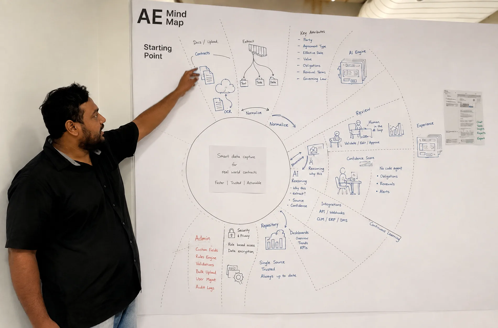

I design for difficult decisions.
I came to product through graphic design, fashion, and a denim label I co-founded. That route still shapes how I work: I look for the structure beneath the interface, reduce what competes for attention, and make difficult decisions easier to see.
A career made of different materials
- 2013–2017 · NIFT Chennai, Lee CooperVisual foundations
Composition is not decoration. It decides what gets seen first, what waits and what disappears. A beautiful direction still has to survive production and the hands that make it. What stayed: hierarchy, typography, rhythm, respect for constraints, and the difference between a concept and a thing that ships.
- 2019–2021 · AirtelConsumer scale
At scale, one unclear choice becomes millions of moments of friction. What stayed: behavioural evidence, support that answers what someone meant rather than what they typed, and the knowledge that small interface choices compound.
- 2021–now · Sirion.aiEnterprise AI
AI can answer. A person still has to judge the evidence, consequence and next move. What stayed: decision systems, provenance, actions you can undo, human checkpoints, and interfaces that stay steady when the model is unsure.
Experience
- Product Designer Sirion.ai Enterprise contract management, used by global legal teams.
- UX Designer Bharti Airtel Airtel Thanks, one of India’s largest consumer apps.
- UI/UX Designer Think Matra
- Senior Creative UI Designer Great Place to Study
- Co-founder and Creative Director Zhero Denim
- Graphic and Product Designer Lee Cooper
Bachelor of Design, NIFT Chennai · Design Thinking, Stanford Graduate School of Business (online).

Some of it I learn at home. My daughter rarely explains where an experience failed. She pauses, tries something else, or leaves. It left me a sharper eye for where confidence breaks, and respect for what people do instead of what they say.